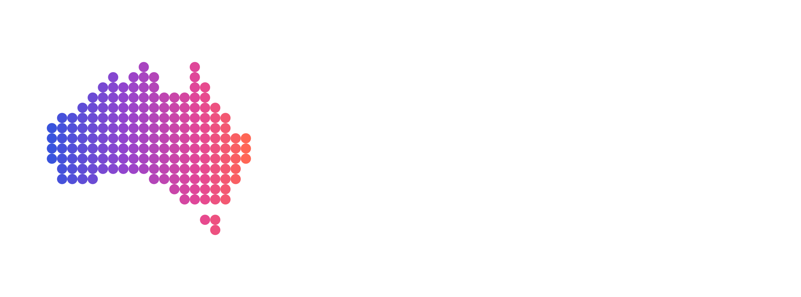
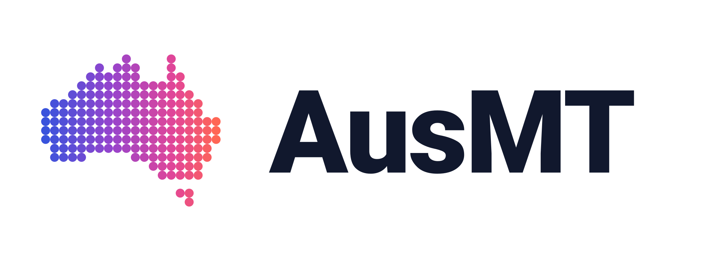
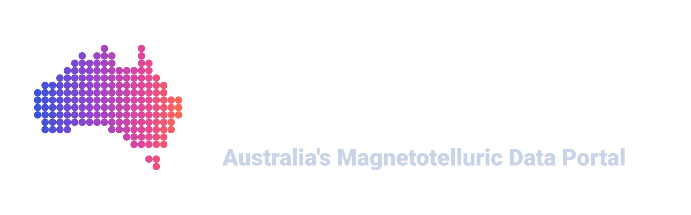
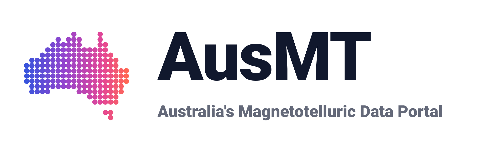
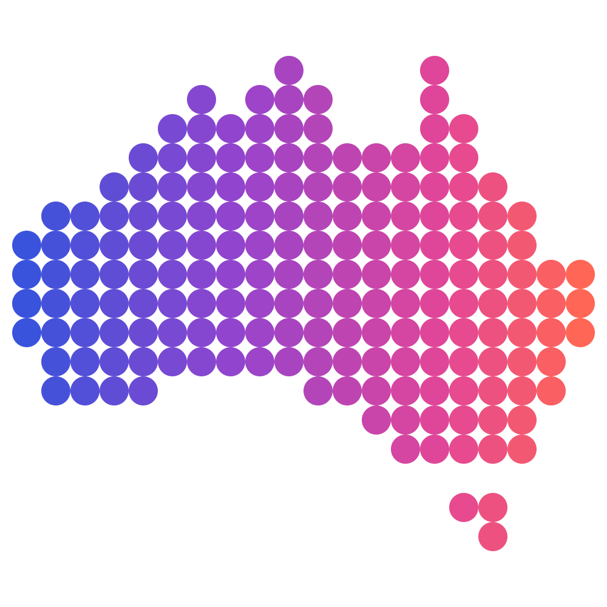
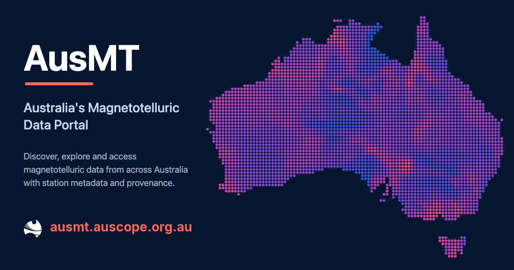

Brand and assets
The AusMT logos, the standalone mark and the presentation artwork, ready to drop into a talk, a paper or a poster.
AusMT logos and graphics are available for use in presentations, publications and other material referring to AusMT. Use the dark-background version on dark colours and the light-background version on light colours. Please retain the proportions, colours and clear space of the AusMT mark.
Logo
The mark beside the wordmark. Use this wherever AusMT is being identified and the space is a horizontal strip: a slide footer, a header, a partner row.






Logo with tagline
The same lockup with the descriptive line, for the first slide, a title page or anywhere AusMT is being introduced rather than credited.






Mark
The symbol on its own, for an avatar, a slide corner or anywhere the wordmark would be unreadable. It is AusMT's product mark, carried by the documentation sidebar and the social card; this site's own favicon and app icons carry the AuScope mark. It is the same artwork on either background, so the two previews below are one file shown twice.



Colours
Four stops, running cool in the west to warm in the east across the mark. Every dot takes its colour from where it sits, so the palette and the geometry are one decision.
-
#3953DCblue -
#9444CEpurple -
#E44696pink -
#FF6655coral
Presentation artwork
The full pixelated Australia. This is the hero graphic, not a logo: use it as a title slide, a poster panel or a link preview, at a size where the individual stations read. Where AusMT needs to be identified rather than illustrated, use the logo above.


Using them well
- Prefer the SVG. It stays sharp at any size and in print; the PNG is there for tools that will not take a vector.
- Keep clear space around the mark: at least 20% of the mark's height on every side, with nothing else inside it. That is the clear space the lockup files are already drawn with.
- Do not recolour, outline, rotate or stretch the mark, and do not rebuild it from the artwork. The two are different graphics with different jobs.
- AusMT is an AuScope service. Where that relationship needs stating, state it in words rather than by placing another organisation's logo inside the AusMT lockup.